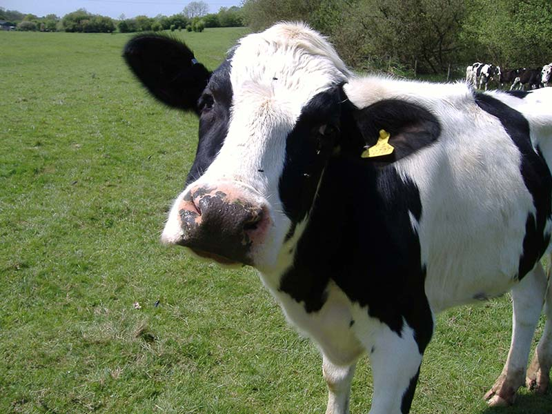
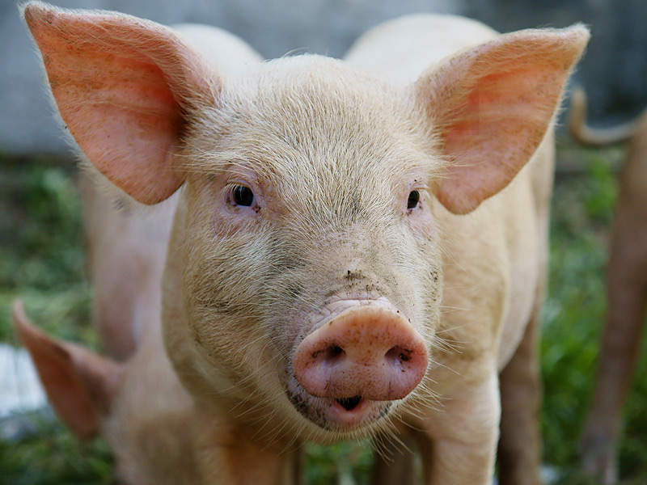
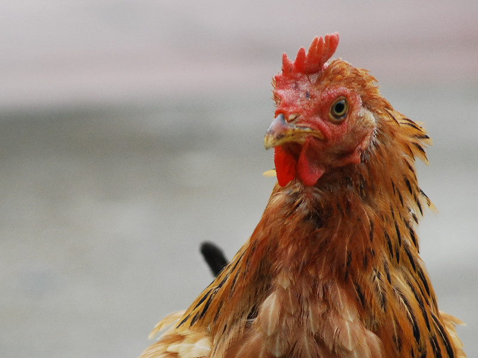
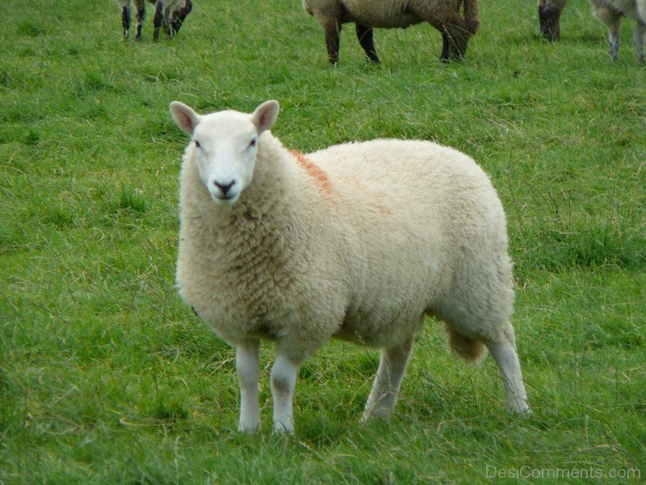

Cows
Cattle, more commonly known as cows are a common farm animal that are raised as livestock for meat, milk, leather and manure. There are approximately 1.4 billion cattle currently in the world according to an estimate from 2009.
 More about Cows herePigs
Pigs are any animals in the genus Sus, these include domestic pigs, wild boars and many other species. Pigs are raised mainly for their meat due to the fact they reproduce quickly and can consume a wide range of food while also being relatively easy to take care of. There are approximately 1 billion pigs alive at any time.
 More about Pigs hereChicken
The chicken is a domesticated fowl that has become a very common food source for humans, they are primarily farmed for their meat and eggs. In 2011, there was a population of approximately 19 billion chickens.
 More about Chickens hereSheep
Sheep are ruminant mammals that are typically kept as livestock, they are kept as livestock for their wool and meat. There are a little over a billion sheep in the world.
 More about Sheep here
Citations
Cattle. (2017, February 20). Retrieved February 22, 2017, from https://en.wikipedia.org/wiki/Cattle
Pig. (2017, February 17). Retrieved February 22, 2017, from https://en.wikipedia.org/wiki/Pig
Chicken. (2017, February 20). Retrieved February 22, 2017, from https://en.wikipedia.org/wiki/Chicken
Sheep. (2017, February 20). Retrieved February 22, 2017, from https://en.wikipedia.org/wiki/Sheep
Created by Evan Tang ™